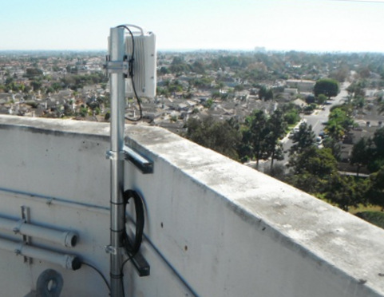

Онлайн-конспект по теме "Беспроводные технологии" для учеников 11-ых классов.
Простейший вид компьютерной сети, при котором два компьютера соединяются между собой напрямую через коммуникационное оборудование. Достоинством такого вида соединения является простота и дешевизна, недостатком — соединить таким образом можно не более двух компьютеров, в отличие от таких методов передачи данных, как широковещание и точка-многоточка.
Беспроводный модуль точка-точка со встроенной антенной:
